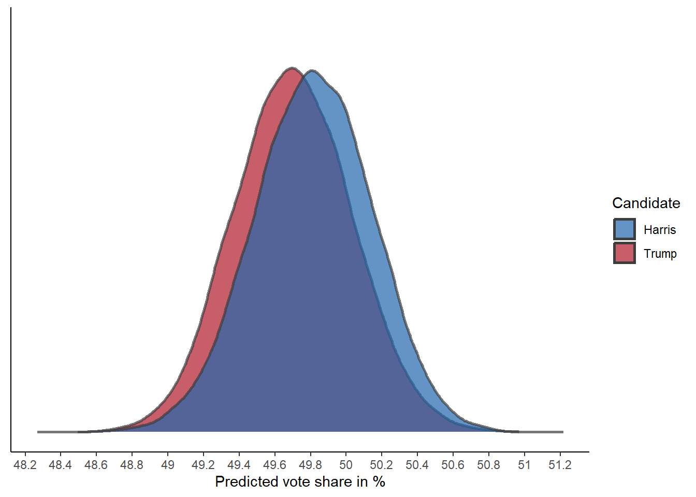
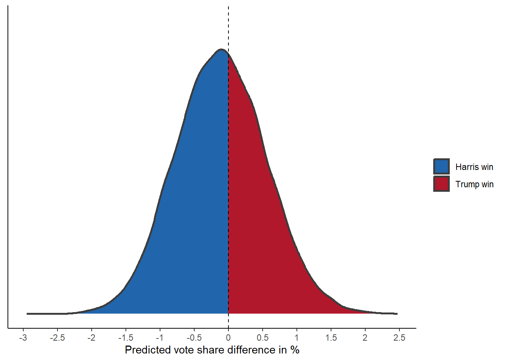
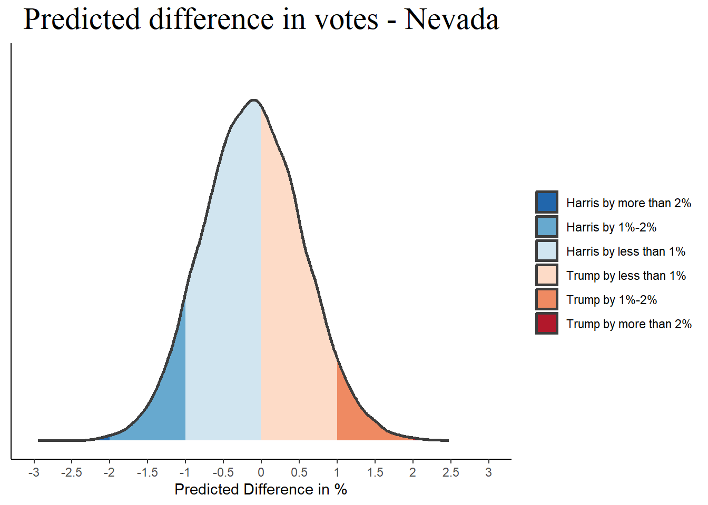
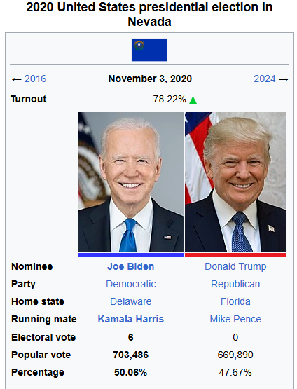
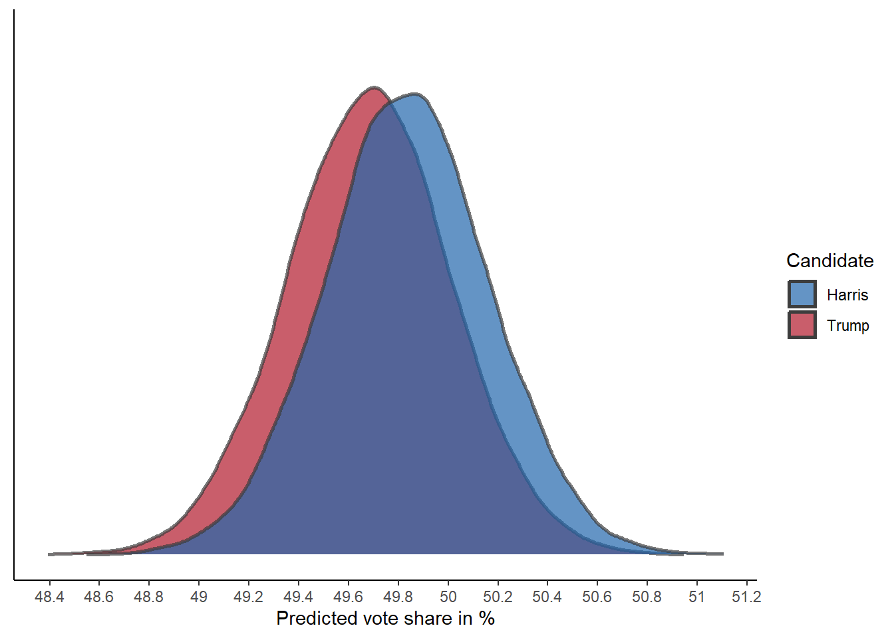
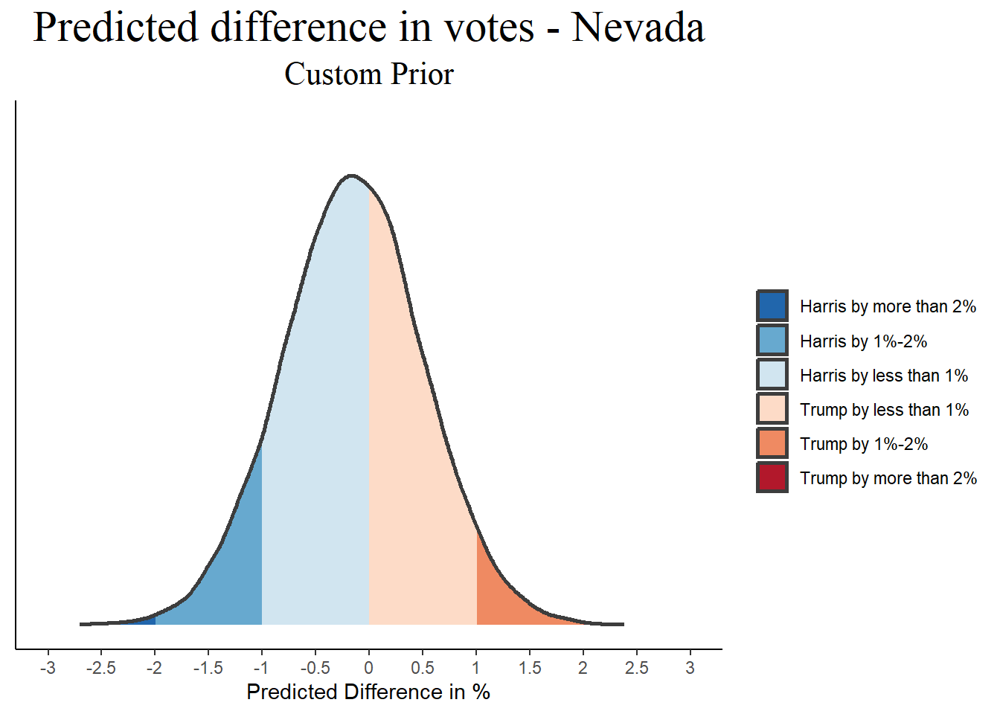
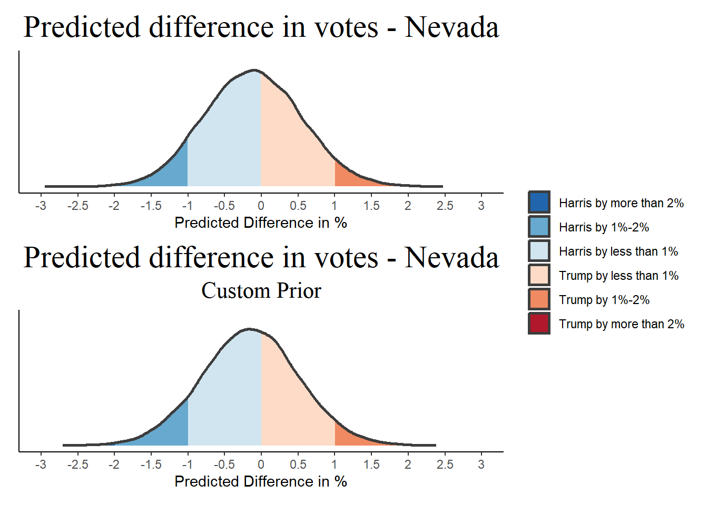
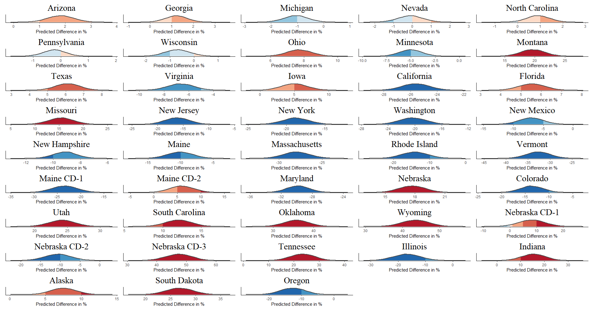
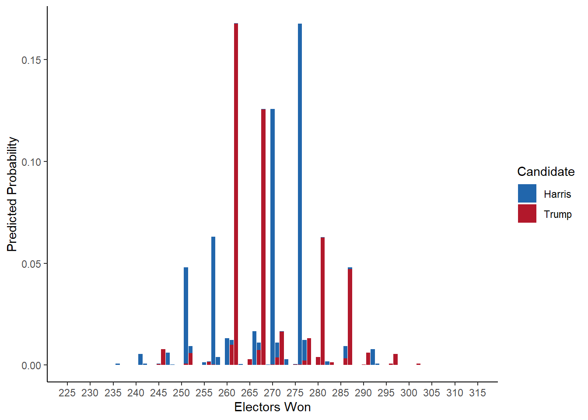
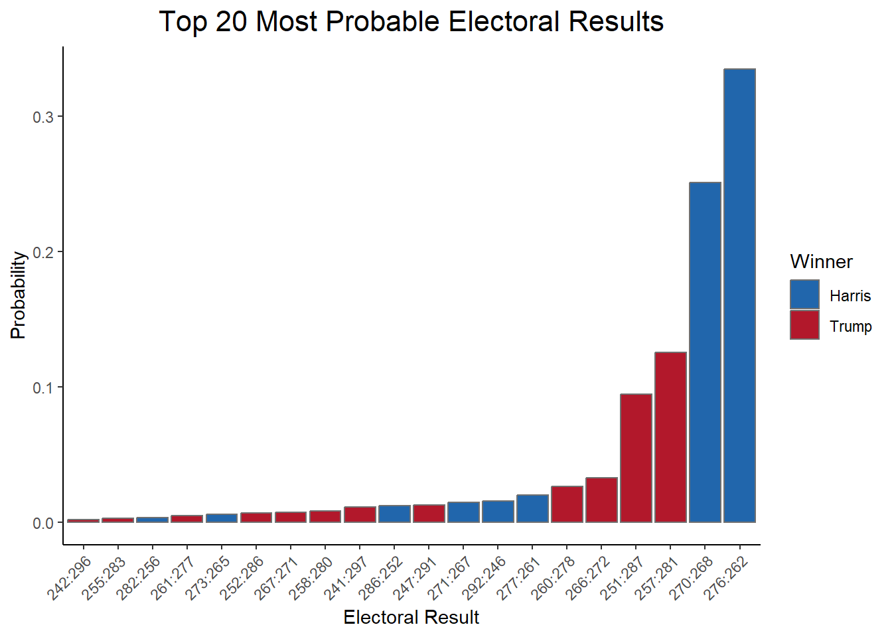

library(tidyverse) # As always
library(brms) # For Bayesian modeling
library(tidybayes) # For visualization
library(patchwork)Setup
Introduction
Ever since I’ve finished my grad studies (Few months ago), I wanted to experiment with some “real life” applications of statistics. Things that interest real people. With the 2024 American presidential elections being the hot issue around the world, and Bayesian statistics being the hot issue of my personal projects, I thought how can these two mix.
Two features of Bayesian statistics pop to mind when thinking about election polling:
Prior Distributions
The need to explicitly define a prior distribution for any Bayesian model is a point of contention. Some (rightfully) argue that this definition can’t be objective, and it is practically impossible to represent the existing body of knowledge in a single probability distribution. Others (rightfully) argue that every statistical model have prior assumptions which are rarely checked, and can influence the model as much as a prior distribution.1
One reason the incorporation of past studies into the prior distribution is hard, is that it depends on the specific parameters of the model. While this make things hard in many cases, election polling is one area where it should be relatively easy! every poll is essentially the same statistical model (how many votes for red, and how many votes for blue), but with different data every time. This is the ideal scenario for a Bayesian statistician as the posterior distribution (the result) of any poll can be used as the prior distribution for the next poll!
Posterior Predictive Distributions
One tool of Bayesian statistical inference is the Posterior Predictive Distributions - PPD. This is the prediction of the model. For example, one possible PPD from a Bayesian election poll could be the expected electoral college result for each candidate, or the expected number of seats in the parliament.
Data
The following dataset is a summary of many polls conducted from the start of 2023, up to two days before the election.
data <- read_csv("../elections2024/president_polls.csv", show_col_types = F)glimpse(data)Rows: 18,095
Columns: 52
$ poll_id <dbl> 89372, 89372, 89372, 89372, 89372, 89372, 89…
$ pollster_id <dbl> 1528, 1528, 1528, 1528, 1528, 1528, 1528, 15…
$ pollster <chr> "AtlasIntel", "AtlasIntel", "AtlasIntel", "A…
$ sponsor_ids <dbl> NA, NA, NA, NA, NA, NA, NA, NA, NA, NA, NA, …
$ sponsors <chr> NA, NA, NA, NA, NA, NA, NA, NA, NA, NA, NA, …
$ display_name <chr> "AtlasIntel", "AtlasIntel", "AtlasIntel", "A…
$ pollster_rating_id <dbl> 546, 546, 546, 546, 546, 546, 546, 546, 546,…
$ pollster_rating_name <chr> "AtlasIntel", "AtlasIntel", "AtlasIntel", "A…
$ numeric_grade <dbl> 2.7, 2.7, 2.7, 2.7, 2.7, 2.7, 2.7, 2.7, 2.7,…
$ pollscore <dbl> -0.8, -0.8, -0.8, -0.8, -0.8, -0.8, -0.8, -0…
$ methodology <chr> "Online Ad", "Online Ad", "Online Ad", "Onli…
$ transparency_score <dbl> 6, 6, 6, 6, 6, 6, 6, 6, 6, 6, 6, 6, 6, 6, 6,…
$ state <chr> NA, NA, NA, NA, NA, NA, NA, "Arizona", "Ariz…
$ start_date <chr> "11/3/24", "11/3/24", "11/3/24", "11/3/24", …
$ end_date <chr> "11/4/24", "11/4/24", "11/4/24", "11/4/24", …
$ sponsor_candidate_id <dbl> NA, NA, NA, NA, NA, NA, NA, NA, NA, NA, NA, …
$ sponsor_candidate <chr> NA, NA, NA, NA, NA, NA, NA, NA, NA, NA, NA, …
$ sponsor_candidate_party <chr> NA, NA, NA, NA, NA, NA, NA, NA, NA, NA, NA, …
$ endorsed_candidate_id <lgl> NA, NA, NA, NA, NA, NA, NA, NA, NA, NA, NA, …
$ endorsed_candidate_name <lgl> NA, NA, NA, NA, NA, NA, NA, NA, NA, NA, NA, …
$ endorsed_candidate_party <lgl> NA, NA, NA, NA, NA, NA, NA, NA, NA, NA, NA, …
$ question_id <dbl> 216453, 216453, 216453, 216453, 216453, 2164…
$ sample_size <dbl> 2703, 2703, 2703, 2703, 2703, 2703, 2703, 87…
$ population <chr> "lv", "lv", "lv", "lv", "lv", "lv", "lv", "l…
$ subpopulation <lgl> NA, NA, NA, NA, NA, NA, NA, NA, NA, NA, NA, …
$ population_full <chr> "lv", "lv", "lv", "lv", "lv", "lv", "lv", "l…
$ tracking <lgl> NA, NA, NA, NA, NA, NA, NA, NA, NA, NA, NA, …
$ created_at <chr> "11/4/24 19:06", "11/4/24 19:06", "11/4/24 1…
$ notes <chr> NA, NA, NA, NA, NA, NA, NA, NA, NA, NA, NA, …
$ url <chr> "https://atlasintel.org/poll/usa-national-20…
$ url_article <chr> "https://atlasintel.org/poll/usa-national-20…
$ url_topline <chr> NA, NA, NA, NA, NA, NA, NA, NA, NA, NA, NA, …
$ url_crosstab <chr> "https://cdn.atlasintel.org/f1cec70d-8eae-44…
$ source <dbl> NA, NA, NA, NA, NA, NA, NA, NA, NA, NA, NA, …
$ internal <lgl> NA, NA, NA, NA, NA, NA, NA, NA, NA, NA, NA, …
$ partisan <chr> NA, NA, NA, NA, NA, NA, NA, NA, NA, NA, NA, …
$ race_id <dbl> 8914, 8914, 8914, 8914, 8914, 8914, 8914, 87…
$ cycle <dbl> 2024, 2024, 2024, 2024, 2024, 2024, 2024, 20…
$ office_type <chr> "U.S. President", "U.S. President", "U.S. Pr…
$ seat_number <dbl> 0, 0, 0, 0, 0, 0, 0, 0, 0, 0, 0, 0, 0, 0, 0,…
$ seat_name <lgl> NA, NA, NA, NA, NA, NA, NA, NA, NA, NA, NA, …
$ election_date <chr> "11/5/24", "11/5/24", "11/5/24", "11/5/24", …
$ stage <chr> "general", "general", "general", "general", …
$ nationwide_batch <lgl> FALSE, FALSE, FALSE, FALSE, FALSE, FALSE, FA…
$ ranked_choice_reallocated <lgl> FALSE, FALSE, FALSE, FALSE, FALSE, FALSE, FA…
$ ranked_choice_round <dbl> NA, NA, NA, NA, NA, NA, NA, NA, NA, NA, NA, …
$ hypothetical <lgl> FALSE, FALSE, FALSE, FALSE, FALSE, FALSE, FA…
$ party <chr> "DEM", "REP", "GRE", "IND", "LIB", "DEM", "R…
$ answer <chr> "Harris", "Trump", "Stein", "West", "Oliver"…
$ candidate_id <dbl> 16661, 16651, 31116, 31097, 31790, 16661, 16…
$ candidate_name <chr> "Kamala Harris", "Donald Trump", "Jill Stein…
$ pct <dbl> 48.1, 49.2, 1.1, 0.3, 0.1, 48.8, 50.0, 45.9,…Preprocessing
Some preprocessing and cleaning is needed here, mainly I want to include only recent polls to avoid dealing with a large number of candidates, and transforming the percentage of votes into a probability:
data_clean <- data |>
select(poll_id, state, poll_date = start_date, question_id, candidate_name, sample_size, pct) |> # selecting relevant cols only
mutate(pct = pct / 100, # transforming to probabilities
poll_date = mdy(poll_date)) |> # transforming to 'date' types
filter(year(poll_date) >= 2024 & month(poll_date) >= 10) |> # only recent polls to control for speculative candidates
mutate(candidate_name = relevel(factor(candidate_name), ref = "Donald Trump")) |> # Defining 'Trump' to be the reference level
group_by(poll_id) |> # some polls have several q's, this keeps only the main 'who would you vote for' question
filter(question_id == min(question_id)) |>
ungroup()Modeling
From a statistical point of view, an election poll is a multiclass classification problem: It estimates the real proportion of votes for each candidate in the population, from the sampled proportions. The dependent variable is categorical and does not have any ordering. Since we don’t have any predictors other than the observed proportions, the model is what is called an empty model - and it’s formulation in R is usually represented as: DV ~ 1. Due to the structure of the current data, each observation (row) need to be weighted by the observed percentage. In order to include weighting by the poll’s sample size, I multiplied this percentage by the sample size.
This multiclass classification problem can be represented with a series of logistic models, each models one category (candidate) against the others as a binary outcome. In order to do that, I will use the categorical() family implemented in brms.
Let’s start with a simple case, and model results only for Nevada:
data_clean_nv <- data_clean |>
filter(state == "Nevada")bayesian_model_nv <- brm(formula = candidate_name|weights(sample_size*pct) ~ 1,
family = categorical(link = "logit"),
data = data_clean_nv,
chains = 10,
cores = 10,
iter = 4000,
refresh = 0,
seed = 14,
backend = "cmdstanr")summary(bayesian_model_nv) Family: categorical
Links: muChaseOliver = logit; muCornelWest = logit; muJillStein = logit; muJoelSkousen = logit; muKamalaHarris = logit
Formula: candidate_name | weights(sample_size * pct) ~ 1
Data: data_clean_nv (Number of observations: 85)
Draws: 10 chains, each with iter = 4000; warmup = 2000; thin = 1;
total post-warmup draws = 20000
Regression Coefficients:
Estimate Est.Error l-95% CI u-95% CI Rhat Bulk_ESS
muChaseOliver_Intercept -4.92 0.11 -5.14 -4.71 1.00 8712
muCornelWest_Intercept -15.07 10.71 -36.77 -8.70 1.00 2989
muJillStein_Intercept -6.10 0.20 -6.51 -5.73 1.00 8233
muJoelSkousen_Intercept -15.53 12.01 -39.09 -8.70 1.00 2538
muKamalaHarris_Intercept 0.00 0.01 -0.02 0.03 1.00 9124
Tail_ESS
muChaseOliver_Intercept 9672
muCornelWest_Intercept 1751
muJillStein_Intercept 7736
muJoelSkousen_Intercept 1491
muKamalaHarris_Intercept 9396
Draws were sampled using sample(hmc). For each parameter, Bulk_ESS
and Tail_ESS are effective sample size measures, and Rhat is the potential
scale reduction factor on split chains (at convergence, Rhat = 1).A few things to notice here: first, Trump doesn’t have a parameter. That is because brms estimates each parameter in comparison to the factor’s reference level, which is set to \(0\), or \(1\) on the exponential scale. Second, parameter estimates are logits, as this is essentially an output of multiple logistic regressions. In order to transform these estimates into predicted vote shares for every candidate \(j\) out of the \(K\) total candidates, a softmax transformation need to be applied:
\[ P(j)=\frac{e^{Intercept_j}}{\sum_{k=1}^K e^{Intercept_k}} \]
Extracting more precise point-estimates:
draws_nv <- spread_draws(bayesian_model_nv, b_muChaseOliver_Intercept, b_muCornelWest_Intercept, b_muJillStein_Intercept, b_muJoelSkousen_Intercept, b_muKamalaHarris_Intercept)
(c(median(draws_nv$b_muChaseOliver_Intercept), median(draws_nv$b_muCornelWest_Intercept), median(draws_nv$b_muJillStein_Intercept), median(draws_nv$b_muJoelSkousen_Intercept), median(draws_nv$b_muKamalaHarris_Intercept)))[1] -4.913210000 -12.452300000 -6.088395000 -12.626300000 0.002381675For example, applying the softmax transformation in order to get the predicted vote share of Jill Stein:
100 * exp(-6.088395) / (exp(-4.91321) + exp(-12.4523) + exp(-6.088395) + exp(-12.6263) + exp(0.002381675) + exp(0))[1] 0.1127752About 0.1%.
The predicted vote share of Kamala Harris is:
100 * exp(0.002381675) / (exp(-4.91321) + exp(-12.4523) + exp(-6.088395) + exp(-12.6263) + exp(0.002381675) + exp(0))[1] 49.82007And of Donald Trump:
100 * exp(0) / (exp(-4.91321) + exp(-12.4523) + exp(-6.088395) + exp(-12.6263) + exp(0.002381675) + exp(0))[1] 49.70155But, this is a Bayesian model so let’s not stay stuck with point estimates and look at the whole posterior distribution:
Extracting draws:
probs_nv <- draws_nv |>
select(-.chain, -.iteration) |>
mutate(b_muChaseOliver_Intercept = exp(b_muChaseOliver_Intercept),
b_muKamalaHarris_Intercept = exp(b_muKamalaHarris_Intercept),
b_muJillStein_Intercept = exp(b_muJillStein_Intercept),
b_muCornelWest_Intercept = exp(b_muCornelWest_Intercept),
b_muJoelSkousen_Intercept = exp(b_muJoelSkousen_Intercept)) |>
mutate(row_sum = b_muChaseOliver_Intercept + b_muKamalaHarris_Intercept + b_muJillStein_Intercept + b_muCornelWest_Intercept + b_muJoelSkousen_Intercept + 1) |>
mutate(Trump = 1 / row_sum,
Harris = b_muKamalaHarris_Intercept / row_sum) |>
select(.draw, Trump, Harris)probs_nv |>
pivot_longer(cols = c(Trump, Harris),
names_to = "Candidate",
values_to = "prob") |>
ggplot(aes(x = prob * 100, fill = Candidate)) +
stat_slab(color = "gray24", alpha = 0.7) +
scale_fill_manual(values = c("#2166AC", "#B2182B")) +
scale_x_continuous(breaks = seq(48, 52, 0.2), labels = seq(48, 52, 0.2)) +
labs(x = "Predicted vote share in %") +
theme_classic() +
theme(axis.title.y = element_blank(),
axis.text.y = element_blank(),
axis.ticks.y = element_blank())
Very close!
And what is the predicted difference between the two main candidates?
probs_nv |>
mutate(diff = Trump - Harris) |>
ggplot(aes(x = diff * 100, fill = after_stat(x > 0))) +
stat_slab(color = "gray24") +
geom_vline(xintercept = 0, linetype = "dashed") +
scale_fill_manual(values = c("#2166AC", "#B2182B"), labels = c("Harris win", "Trump win")) +
scale_x_continuous(breaks = seq(-3, 4, 0.5), labels = seq(-3, 4, 0.5)) +
labs(x = "Predicted vote share difference in %", fill = " ") +
theme_classic() +
theme(axis.title.y = element_blank(),
axis.text.y = element_blank(),
axis.ticks.y = element_blank())
Again, very close (with a slight advantage to Harris).
Another useful measure from Bayesian statistics is the probability of direction (pd). Due to the winner-takes-all electoral system in 48 of the 50 states, the difference doesn’t really matter. So what is the probability that each candidate will win?
The probability that Trump will win is seen in the red area in the plot above, that is the probability that the difference in vote share is positive:
diff <- probs_nv$Trump - probs_nv$Harrislength(diff[diff > 0]) / length(diff)[1] 0.42815Trump has a 42.82% chance of winning Nevada.
length(diff[diff < 0]) / length(diff)[1] 0.57185And Harris has 57.19% chance.
Let’s make the plot a little more informative:
diff_plot <- probs_nv |>
mutate(diff = Trump - Harris) |>
mutate(diff = diff * 100) |>
ggplot(aes(x = diff, fill = after_stat(cut(x, breaks = c(-Inf, -2, -1, 0, 1, 2, Inf), labels = c("Harris by more than 2%", "Harris by 1%-2%", "Harris by less than 1%", "Trump by less than 1%", "Trump by 1%-2%", "Trump by more than 2%"))))) +
stat_slab(color = "gray24") +
scale_fill_manual(values = rev(RColorBrewer::brewer.pal(6, "RdBu"))) +
scale_x_continuous(limits = c(-3, 3), breaks = seq(-3, 3, 0.5), labels = seq(-3, 3, 0.5)) +
labs(fill = " ", x = "Predicted Difference in %", title = "Predicted difference in votes - Nevada") +
theme_classic() +
theme(axis.title.y = element_blank(),
axis.text.y = element_blank(),
axis.ticks.y = element_blank(),
plot.title = element_text(family = "serif", size = 22, hjust = 0.5))diff_plot
Eliciting a custom prior
For the last model we used brms’ default prior. In order to elicit our own, For simplicity, I’ll start with the 2020 vote share between Biden and Trump:

Note
This part contain some math. Don’t skip it, you can understand it! But if you want to skip it, go to the ‘Modeling with a custom prior’ section.
prior_trump <- 0.4767
prior_harris <- 0.5006These percentages need to be transformed to the logistic model’s scale, now using the inverse-softmax transformation:
\[ 0.5006=softmax(Intercept_{Harris})=\frac{e^{Intercept_{Harris}}}{\sum_{k=1}^K e^{Intercept_k}} \]
And:
\[ 0.4767=softmax(Intercept_{Trump})=\frac{e^{Intercept_{Trump}}}{\sum_{k=1}^K e^{Intercept_k}} \]
But with Trump’s intercept fixed to \(0\) as the factor’s reference level, it’s possible to calculate the sum in the denominator:
\[ 0.4767=\frac{1}{\sum_{k=1}^K e^{Intercept_k}} \]
Quick algebra gives:
\[ \sum_{k=1}^K e^{Intercept_k}=\frac{1}{0.4767}=2.097755 \]
Now it’s possible to calculate Harris’ intercept:
\[ 0.5006=\frac{e^{Intercept_{Harris}}}{2.097755} \]
\[ e^{Intercept_{Harris}}=0.5006 \cdot 2.097755=1.050136 \]
\[ Intercept_{Harris}=ln(1.050136)=0.04891968 \]
A quicker way to derive these intercepts is to notice that for every candidate \(j\) other than the ‘reference’ candidate \(r\), the intercept is:
\[ Intercept_j=ln(\frac{P(j)}{P(r)}) \]
Where \(P(j)\) and \(P(r)\) are the assumed vote shares of candidate \(j\) and \(r\) respectively.
Modeling with a custom prior
Setting the prior for Harris’ intercept, giving it relatively large standard deviation reflecting the many factors differentiating the 2024 and 2020 elections.
prior_nv <- set_prior("normal(0.04891968, 0.1)", class = "Intercept", dpar = "muKamalaHarris")bayesian_model_nv_wprior <- brm(formula = candidate_name|weights(sample_size*pct) ~ 1,
family = categorical(link = "logit"),
data = data_clean_nv,
prior = prior_nv,
chains = 10,
cores = 10,
iter = 4000,
refresh = 0,
seed = 14,
backend = "cmdstanr")summary(bayesian_model_nv_wprior) Family: categorical
Links: muChaseOliver = logit; muCornelWest = logit; muJillStein = logit; muJoelSkousen = logit; muKamalaHarris = logit
Formula: candidate_name | weights(sample_size * pct) ~ 1
Data: data_clean_nv (Number of observations: 85)
Draws: 10 chains, each with iter = 4000; warmup = 2000; thin = 1;
total post-warmup draws = 20000
Regression Coefficients:
Estimate Est.Error l-95% CI u-95% CI Rhat Bulk_ESS
muChaseOliver_Intercept -4.92 0.11 -5.14 -4.71 1.00 10322
muCornelWest_Intercept -14.79 7.81 -36.48 -8.68 1.01 2915
muJillStein_Intercept -6.09 0.20 -6.50 -5.72 1.00 9801
muJoelSkousen_Intercept -15.41 11.07 -37.29 -8.72 1.00 2797
muKamalaHarris_Intercept 0.00 0.01 -0.02 0.03 1.00 10356
Tail_ESS
muChaseOliver_Intercept 10191
muCornelWest_Intercept 1659
muJillStein_Intercept 9246
muJoelSkousen_Intercept 1551
muKamalaHarris_Intercept 10037
Draws were sampled using sample(hmc). For each parameter, Bulk_ESS
and Tail_ESS are effective sample size measures, and Rhat is the potential
scale reduction factor on split chains (at convergence, Rhat = 1).I’ll inspect the model again, this time using the brms::posterior_epred() function, generating predictions on the probability scale:
new_data <- expand.grid(x = NA)
pred_probs_nv <- posterior_epred(bayesian_model_nv_wprior, newdata = new_data)This essentially creates a \(20,000 \times 6\) array of 20,000 “simulated elections” based on the model, and the vote share of each of the 6 candidates. For example, here are the first five simulated elections and the vote share in each:
pred_probs_nv[1:5,,] Donald Trump Chase Oliver Cornel West Jill Stein Joel Skousen
[1,] 0.4953947 0.003684427 5.757740e-05 0.001019819 1.934454e-05
[2,] 0.4994877 0.004458325 1.934866e-06 0.001474521 1.406709e-05
[3,] 0.5026360 0.003951306 1.079202e-06 0.001657708 8.114247e-06
[4,] 0.5044252 0.003509907 9.118997e-07 0.001623817 1.605403e-06
[5,] 0.4987907 0.003857605 2.889669e-06 0.001544016 5.206677e-06
Kamala Harris
[1,] 0.4998241
[2,] 0.4945634
[3,] 0.4917458
[4,] 0.4904386
[5,] 0.4957995Turning it into the same plots as before gives:
pred_probs_nv_df <- data.frame(pred_probs_nv[,1,]) |>
mutate(poll_id = factor(c(1:n()))) |>
pivot_longer(cols = !poll_id,
names_to = "Candidate",
values_to = "Proportion") |>
mutate(Candidate = str_replace_all(Candidate, "\\.", " ")) |>
mutate(Candidate = str_replace(Candidate, "^\\S* ", ""))prob_plot <- pred_probs_nv_df |>
filter(Candidate %in% c("Trump", "Harris")) |>
ggplot(aes(x = 100 * Proportion, fill = Candidate)) +
ggdist::stat_slab(color = "gray24", alpha = 0.7) +
scale_fill_manual(values = c("#2166AC", "#B2182B")) +
scale_x_continuous(breaks = seq(48, 52, 0.2), labels = seq(48, 52, 0.2)) +
labs(x = "Predicted vote share in %") +
theme_classic() +
theme(axis.title.y = element_blank(),
axis.text.y = element_blank(),
axis.ticks.y = element_blank())prob_plot
diff_plot_wprior <- pred_probs_nv_df |>
filter(Candidate %in% c("Trump", "Harris")) |>
pivot_wider(id_cols = poll_id,
names_from = Candidate,
values_from = Proportion) |>
mutate(diff = Trump - Harris) |>
mutate(diff = diff * 100) |>
ggplot(aes(x = diff, fill = after_stat(cut(x, breaks = c(-Inf, -2, -1, 0, 1, 2, Inf), labels = c("Harris by more than 2%", "Harris by 1%-2%", "Harris by less than 1%", "Trump by less than 1%", "Trump by 1%-2%", "Trump by more than 2%"))))) +
ggdist::stat_slab(color = "gray24") +
scale_fill_manual(values = rev(RColorBrewer::brewer.pal(6, "RdBu"))) +
scale_x_continuous(limits = c(-3, 3), labels = seq(-3, 3, 0.5), breaks = seq(-3, 3, 0.5)) +
labs(fill = " ", x = "Predicted Difference in %", title = "Predicted difference in votes - Nevada", subtitle = "Custom Prior") +
theme_classic() +
theme(axis.title.y = element_blank(),
axis.text.y = element_blank(),
axis.ticks.y = element_blank(),
plot.title = element_text(family = "serif", size = 22, hjust = 0.5),
plot.subtitle = element_text(family = "serif", size = 16, hjust = 0.5))diff_plot_wprior
How much the custom prior has changed the result?
diff_plot / diff_plot_wprior +
plot_layout(guides = "collect")
Visually, not by much…
And what about the predicted chance of each candidate of winning the state?
probs_nv <- pred_probs_nv_df |>
filter(Candidate %in% c("Trump", "Harris")) |>
pivot_wider(id_cols = poll_id,
names_from = Candidate,
values_from = Proportion)
diff <- probs_nv$Trump - probs_nv$Harrislength(diff[diff > 0]) / length(diff)[1] 0.40885Trump now has a 40.89% chance of winning Nevada, compared with the 42.82% he had before.
length(diff[diff < 0]) / length(diff)[1] 0.59115And Harris has 59.12% chance, a slight increase from the 57.19% she had before.
Although visually there hasn’t been much of a change, the prior shifted the chances of winning by ~2% in favor of Harris.
Running models for all states
In this section I run the same Bayesian model for each state. The better way of doing it will be to run one big model with state as a categorical predictor.2 This one-big-model method didn’t converge on the current data, so I resort to run a separate model for each state.
Here I define some functions to run on the list of states:
run_b_model <- function(state) {
data_clean_state <- data_clean[data_clean$state == state,]
bayesian_model <- brm(formula = candidate_name|weights(sample_size*pct) ~ 1,
family = categorical(link = "logit"),
data = data_clean_state,
chains = 10,
cores = 10,
iter = 4000,
refresh = 0,
seed = 14,
backend = "cmdstanr")
return(bayesian_model)
}
plots <- function(state) {
b_model <- run_b_model(state = state)
new_data <- expand.grid(x = NA)
pred_prob <- posterior_epred(b_model, newdata = new_data)
pred_prob_df <- data.frame(pred_prob[,1,]) |>
mutate(poll_id = factor(c(1:n()))) |>
pivot_longer(cols = !poll_id,
names_to = "Candidate",
values_to = "Proportion") |>
mutate(Candidate = str_squish(str_replace_all(Candidate, "\\.", " ")))
prob_plot <- pred_prob_df |>
filter(Candidate %in% c("Donald Trump", "Kamala Harris")) |>
ggplot(aes(x = Proportion, fill = Candidate)) +
ggdist::stat_slab(alpha = 0.8) +
theme_classic() +
theme(axis.title.y = element_blank(),
axis.text.y = element_blank(),
axis.ticks.y = element_blank())
diff_df <- pred_prob_df |>
filter(Candidate %in% c("Donald Trump", "Kamala Harris")) |>
pivot_wider(id_cols = poll_id,
names_from = Candidate,
values_from = Proportion) |>
mutate(diff = 100*(`Donald Trump` - `Kamala Harris`),
state = state) |>
mutate(diff_label = cut(diff, breaks = c(-Inf, -10, -5, -1, 0, 1, 5, 10, Inf), labels = c("Harris by more than 10%", "Harris by 10%-5%", "Harris by 5%-1%", "Harris by less than 1%", "Trump by less than 1%", "Trump by 5%-1%", "Trump by 10%-5%", "Trump by more than 10%"))) |>
mutate(diff_label = factor(diff_label, levels = c("Harris by more than 10%", "Harris by 10%-5%", "Harris by 5%-1%", "Harris by less than 1%", "Trump by less than 1%", "Trump by 5%-1%", "Trump by 10%-5%", "Trump by more than 10%"), ordered = TRUE))
diff_plot <- diff_df |>
ggplot(aes(x = diff, fill = after_stat(cut(x, breaks = c(-Inf, -10, -5, -1, 0, 1, 5, 10, Inf), labels = c("Harris by more than 10%", "Harris by 10%-5%", "Harris by 5%-1%", "Harris by less than 1%", "Trump by less than 1%", "Trump by 5%-1%", "Trump by 10%-5%", "Trump by more than 10%"))))) +
ggdist::stat_slab(color = "gray30") +
scale_fill_manual(values = rev(RColorBrewer::brewer.pal(8, "RdBu"))[sort(as.numeric(unique(diff_df$diff_label)))]) +
labs(fill = "Difference in %", x = "Predicted Difference in %", title = glue::glue("{state}")) +
theme_classic() +
theme(axis.title.y = element_blank(),
axis.text.y = element_blank(),
axis.ticks.y = element_blank(),
plot.title = element_text(family = "serif", size = 22, hjust = 0.5))
return(list(model = b_model, prob = prob_plot, diff = diff_plot))
}Running it on every state:
states <- lapply(X = unique(data_clean$state)[!(is.na(unique(data_clean$state)))],
FUN = plots)Extracting the predicted difference between Harris and Trump in each state:
diff_plots <- lapply(X = 1:43,
FUN = function(x) {states[[x]]$diff})
one_big_plot <- patchwork::wrap_plots(diff_plots, ncol = 5, nrow = 9) +
plot_layout(guides = "collect") +
plot_annotation(theme = theme(legend.position = "none",
plot.title = element_text(family = "serif", size = 14, hjust = 0.5)))one_big_plot
Expected Electoral College Results
Using the Bayesian model it is possible to calculate the expected electoral college results. For each ‘simulated’ election, I will calculate the electoral votes each candidate won.
electors_df <- read_csv("../elections2024/2024_Electoral_College.csv", show_col_types = FALSE) # Data frame containing elector count for each stateFor simulated election, the winner in each state is determined based on the predicted difference in votes (positive = Trump win, Negative = Harris win):
states_df_list <- lapply(X = 1:43,
FUN = function(x) {states[[x]]$diff$data})
states_df <- do.call("rbind", states_df_list) |>
mutate(diff_binary = case_when(diff > 0 ~ "Trump",
diff < 0 ~ "Harris")) |>
select(poll_id, diff_binary, state) |>
left_join(select(electors_df, State, Total), by = join_by(state == State)) |>
mutate(Total = case_when(state %in% c("Nebraska", "Maine") ~ 2,
.default = Total)) |>
replace_na(list(Total = 1))
glimpse(states_df)Rows: 860,000
Columns: 4
$ poll_id <fct> 1, 2, 3, 4, 5, 6, 7, 8, 9, 10, 11, 12, 13, 14, 15, 16, 17,…
$ diff_binary <chr> "Trump", "Trump", "Trump", "Trump", "Trump", "Trump", "Tru…
$ state <chr> "Arizona", "Arizona", "Arizona", "Arizona", "Arizona", "Ar…
$ Total <dbl> 11, 11, 11, 11, 11, 11, 11, 11, 11, 11, 11, 11, 11, 11, 11…Summing all electors for each candidate in each simulated election (and completing the picture with states that were not polled):
expected_electors <- states_df |>
group_by(poll_id, diff_binary) |>
reframe(tot = sum(Total)) |>
mutate(tot = case_when(diff_binary == "Trump" ~ tot + 9 + 6 + 4 + 6 + 8 + 8 + 6 + 3 + 4,
diff_binary == "Harris" ~ tot + 7 + 3 + 3 + 4))
head(expected_electors)# A tibble: 6 × 3
poll_id diff_binary tot
<fct> <chr> <dbl>
1 1 Harris 276
2 1 Trump 262
3 2 Harris 276
4 2 Trump 262
5 3 Harris 270
6 3 Trump 268Visualizing each electoral result for both candidate, and their predicted probability:
expected_electors |>
drop_na(diff_binary) |>
group_by(diff_binary, tot) |>
reframe(count = n()) |>
mutate(percent = count/sum(count)) |>
ggplot(aes(x = tot, y = percent, fill = diff_binary)) +
geom_bar(stat = "identity") +
scale_x_continuous(limits = c(225, 315), breaks = seq(225, 315, 5), labels = seq(225, 315, 5)) +
scale_fill_manual(values = c("#2166AC", "#B2182B")) +
labs(y = "Predicted Probability", x = "Electors Won", fill = "Candidate") +
theme_classic()
The most probable results are a narrow electoral win for Harris, with over representation for Trump in the high end, and for Harris on the low end. This could be understood as higher probability for a Trump landslide, rather than a Harris landslide.
Calculating the most probable results:
probable_outcomes <- expected_electors |>
drop_na(diff_binary) |>
pivot_wider(names_from = diff_binary,
values_from = tot,
id_cols = poll_id) |>
count(Harris, Trump) |>
rename(count = n) |>
mutate(count = count / sum(count)) |>
unite(outcome, Harris:Trump, remove = FALSE, sep = ":")Top 20 most probable results:
top20_probable_outcomes <- probable_outcomes |>
arrange(desc(count)) |>
head(20) |>
mutate(Winner = case_when(Trump > Harris ~ "Trump",
.default = "Harris"))ggplot(top20_probable_outcomes, aes(x = reorder(outcome, count), y = count, fill = Winner)) +
geom_bar(stat = "identity", color = "gray44") +
scale_fill_manual(values = c("Harris" = "#2166AC", "Trump" = "#B2182B")) +
labs(
title = "Top 20 Most Probable Electoral Results",
x = "Electoral Result",
y = "Probability",
fill = "Winner"
) +
theme_classic() +
theme(
axis.text.x = element_text(angle = 45, hjust = 1),
plot.title = element_text(hjust = 0.5, size = 16)
)
Conclusion
Of course there are a lot more interesting calculations and visualizations that can be derived from the current Bayesian model, and from other models. This is a first attempt at implementing Bayesian statistical methods in the election polling field, I had fun.